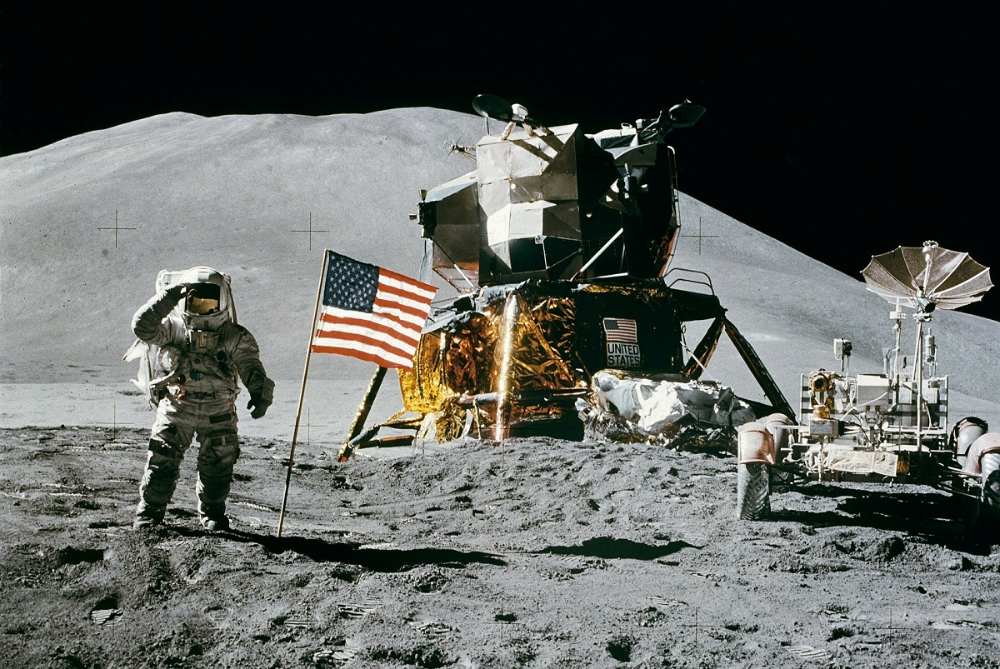

20 de Julho de 1969
Lunar Eagle

O módulo Lunar Eagle, parte da missão Apollo 11, pousou na Lua, carregando os astronautas Neil Armstrong e Buzz Aldrin. Pela primeira vez a humanidade pisava em outro corpo celeste.
Os astronautas deixaram na superfície lunar, presa à escada do Eagle, uma placa com os dizeres:
“Aqui, homens do Planeta Terra pisaram pela primeira vez na Lua em julho de 1969, D.C. Viemos em paz por toda a humanidade”.